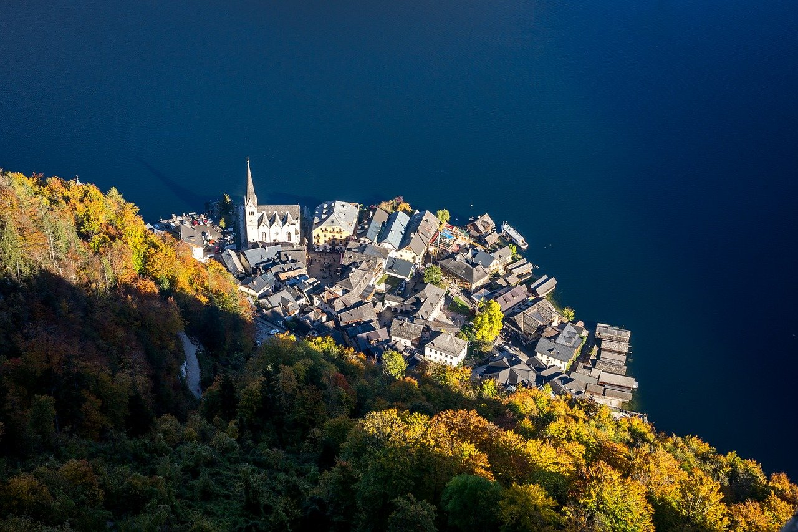

Austria🇦🇹 to kraj pełen uroku, łączący bogatą historię z pięknymi krajobrazami.
Od majestatycznych budowli Wiednia, przez zielone winnice, alpejskie szczyty pokryte śniegiem, po wybitne spektakle operowe i baletowe – każdy znajdzie tu coś dla siebie, niezależnie od budżetu.Bez względu na to, czy planujesz intensywną podróż z plecakiem, czy szybki weekendowy wypad, Austria zachwyca różnorodnością atrakcji.
Wiedeń to doskonały punkt wyjścia do zwiedzania Europy Środkowej, Graz i Linz zachwycają klimatycznymi starówkami i nowoczesnymi kawiarniami, a Salzburg, z barokową architekturą, otoczony górami i jeziorami, jest idealnym miejscem dla miłośników przyrody.
Austria to także malownicze krajobrazy Alp, znane z filmu „Dźwięki muzyki”, które latem zapraszają na wędrówki, a zimą na narty.
Top 5 rzeczy do zobaczenia i zrobienia w Austrii

1. Zwiedzaj Wiedeń
Wiedeń przez wieki był siedzibą władców z dynastii Habsburgów. Dziś to miasto zachwyca piękną architekturą za dnia, a nocą przyciąga letnimi barami i klubami nad Dunajem. Obowiązkowe punkty wizyty to Pałac Belweder, kompleks Hofburg z muzeami oraz Pałac Schönbrunn z rozległymi ogrodami. Warto odwiedzić również Naschmarkt z ponad 120 stoiskami spożywczymi oraz MuseumsQuartier, tętniący życiem kompleks kulturalny. W okresie świątecznym koniecznie zobacz słynne jarmarki bożonarodzeniowe, takie jak Christkindlmarkt na Rathausplatz. Wiedeń to miejsce pełne atrakcji!
2. Odkrywaj Salzburg
Miasto narodzin Mozarta oferuje wiele miejsc związanych z tym słynnym kompozytorem. Można odwiedzić jego dom rodzinny i wypić kawę w Café Tomaselli, gdzie często bywał. Salzburg to także miejsce kręcenia filmu „Dźwięki muzyki” – samodzielny spacer śladami rodziny Von Trapp to świetna opcja. Na uwagę zasługują również twierdza Hohensalzburg z XI wieku, renesansowy pałac Hellbrunn, malownicze szlaki, brukowane uliczki, barokowe kościoły i piękne widoki na Alpy. Salzburg to urocze miasto z mniejszą liczbą turystów niż Wiedeń, ale równie bogate w atrakcje.
3. Zobacz Arlberg
St. Anton to urokliwe miasteczko, które latem zachwyca spokojem, a zimą staje się rajem dla narciarzy. Region oferuje 87 wyciągów i kolejek linowych, ponad 300 kilometrów tras narciarskich oraz 200 kilometrów terenów poza szlakami. To największy połączony obszar narciarski w Austrii, idealny dla zaawansowanych narciarzy. Skipassy zaczynają się od 75 EUR dziennie, bez uwzględnienia kosztu wypożyczenia sprzętu.
4.
Wybierz się na wycieczkę po winnicach
Austriackie winiarnie cieszą się światową renomą. Regiony takie jak Burgenland czy Dolna Austria znajdują się zaledwie godzinę jazdy od Wiednia. Można tam spróbować czerwonych i białych win oraz austriackiego wina musującego Sekt. Jednodniowe wycieczki rowerowe po malowniczej dolinie Wachau, obejmujące 2-3 degustacje, kosztują około 100 EUR. Tego rodzaju atrakcje są jednym z najchętniej wspominanych elementów wyjazdów do Austrii.
5.
Przejedź rowerem wzdłuż Dunaju
Szlak rowerowy wzdłuż Dunaju to jeden z najpopularniejszych tras w Europie, prowadzący z Passau w Niemczech do Austrii. Wielu operatorów turystycznych oferuje zorganizowane wycieczki. Cała trasa zajmuje od 4 do 6 dni, w zależności od punktu startowego i końcowego. Koszt samodzielnej wyprawy z zakwaterowaniem, mapami i codziennym transportem bagażu to 400-500 EUR. Wycieczki z przewodnikiem zaczynają się od około 1,000 EUR.
1. Zwiedź Wiedeńskie Muzeum Sztuki
Jedno z największych muzeów w Austrii, Kunsthistorisches Museum, oferuje bogate kolekcje dzieł sztuki i historycznych artefaktów, sięgających czasów starożytnego Egiptu, Grecji i Rzymu. W jego wnętrzach można podziwiać prace wielkich mistrzów, takich jak Gustav Klimt, a także dawne zbroje czy portrety z epoki Habsburgów. Muzeum, otwarte w XIX wieku, zachwyca swoim kunsztem architektonicznym i różnorodnością eksponatów. Wstęp wynosi 21 EUR.
2. Spróbuj swoich sił na stokach narciarskich
Austriackie Alpy to raj dla miłośników sportów zimowych. Wypożyczenie nart lub snowboardu kosztuje około 50 EUR za dzień, a ceny karnetów wahają się od 40 do 70 EUR, w zależności od ośrodka. Nieduże, rodzinne ośrodki, takie jak Niederau, to świetny wybór dla początkujących.
3. Podziwiaj Katedrę św. Szczepana w Wiedniu
Ta majestatyczna gotycka katedra to jeden z symboli Wiednia. Zbudowana w XII wieku, wielokrotnie odbudowywana, przetrwała m.in. zniszczenia wojenne. Kolorowy dach i imponujące wieże czynią ją jednym z najważniejszych zabytków miasta. Warto zwiedzić także podziemia, gdzie znajdują się stare katakumby. Wstęp do katedry kosztuje od 7 EUR, a bilety na wieże lub wycieczki z przewodnikiem mają różne ceny w zależności od opcji.
4. Przejdź się słynną Ringstrasse
Ringstrasse to historyczna trasa otaczająca wiedeńskie centrum. Ten ponad 5-kilometrowy bulwar oferuje widok na najważniejsze budowle miasta, takie jak Parlament, Ratusz czy Opera Narodowa. Spacer tą trasą to doskonały sposób na odkrywanie Wiednia w swoim tempie – i za darmo!
5. Zwiedź pałac Hellbrunn w Salzburgu
Hellbrunn to barokowy pałac, który powstał w XVII wieku jako miejsce wypoczynku dla arystokracji. Na terenie pałacu znajdują się znane „fontanny-pułapki”, które niespodziewanie tryskają wodą i dostarczają zwiedzającym sporo zabawy. W zimie pałac zamienia się w świąteczny targ, a latem jego ogrody są idealnym miejscem na relaks. Wstęp kosztuje 15 EUR, choć w sezonie zimowym część atrakcji jest niedostępna.
6. Zajrzyj do Muzeum Historii Naturalnej
To muzeum w Wiedniu gromadzi ponad 100 000 eksponatów, od meteorytów po prehistoryczne artefakty. Najsłynniejszym z nich jest licząca 25 000 lat figura Wenus z Willendorfu, odnaleziona na terenie Austrii. W muzeum znajduje się również planetarium oferujące pokazy w języku niemieckim i angielskim. Cena biletu wynosi 18 EUR.
Wydatki w Austrii mogą szybko się zwiększyć ze względu na drogie zakwaterowanie, ekskluzywne restauracje i kosztowne atrakcje czy wycieczki. Na szczęście istnieje wiele sposobów na zaoszczędzenie podczas podróży. Oto kilka praktycznych wskazówek:
1. Zabierz wielorazową butelkę na wodę
Woda z kranu w Austrii jest czysta i bezpieczna do picia. Korzystanie z wielorazowej butelki pozwoli zaoszczędzić pieniądze i ograniczyć zużycie plastiku jednorazowego.
2. Skorzystaj z darmowych wycieczek pieszych
W Wiedniu działa kilka firm organizujących bezpłatne spacery po mieście, które są świetnym sposobem na poznanie lokalnej kultury i historii. Warto sprawdzić oferty takich organizacji jak Good Tours, Anna Loves Vienna, Vienna Greeters czy The Original Free Vienna Walking Tour. Nie zapomnij o napiwku dla przewodnika!
3. Odwiedź muzea za darmo
Wiele wiedeńskich muzeów oferuje darmowy wstęp w pierwszą niedzielę każdego miesiąca. Do takich miejsc należą m.in. Wien Museum, Muzeum Historii Wojskowości, Muzeum Zegarów oraz Muzeum Rzymskie.
4. Podróżuj Flixbusem
Flixbus to ekonomiczny sposób na przemieszczanie się po Austrii. Autobusy są wyposażone w Wi-Fi, gniazdka elektryczne i oferują wygodne opcje na dłuższe trasy. To świetna alternatywa dla droższych środków transportu.
5. Gotuj własne posiłki
Jeśli chcesz zaoszczędzić na jedzeniu, wybieraj noclegi w hostelach z dostępem do kuchni. Zakup produktów w lokalnych sklepach i samodzielne gotowanie może nie być tak atrakcyjne jak jedzenie na mieście, ale znacznie obniży koszty podróży.
6.
Zrezygnuj z City Airport Train w Wiedniu
Jeśli nie śpieszysz się do centrum miasta, lepiej uniknąć City Airport Train. Kosztuje 11 EUR, podczas gdy zwykły pociąg to tylko około 4,30 EUR. Różnica w czasie przejazdu jest minimalna, a zaoszczędzone 6,70 EUR możesz wydać na coś przyjemniejszego, na przykład zimne piwo!
7. Spaceruj
Główne miasta w Austrii są na tyle kompaktowe, że można je z łatwością zwiedzać pieszo. Dzięki temu zaoszczędzisz kilka euro, pomijając transport publiczny.
Dzięki tym prostym wskazówkom możesz jeszcze bardziej cieszyć się swoją podróżą.
1. Środki transportu publicznego
Transport publiczny w Austrii jest wygodny, czysty i niezawodny, a w dużych miastach dostępnych jest wiele opcji. W Wiedniu bilet jednorazowy na tramwaj, metro lub autobus kosztuje około 2,40–2,60 EUR. Metro (U-Bahn) kursuje od 5:00 do północy, a w piątki i soboty działa przez całą dobę. W nocy (od 00:30 do 5:00) kursują także specjalne linie autobusowe. W Graz bilet na tramwaj ważny przez godzinę kosztuje 3 EUR, a w Salzburgu ceny biletów na tramwaj i autobus zaczynają się od 2,30 EUR. Dostępne są również bilety dzienne – w Wiedniu 24-godzinny bilet kosztuje 8 EUR, a 48-godzinny 14,10 EUR.
2. Autobusy
Flixbus oferuje niedrogie połączenia, np. z Wiednia do Graz lub do Bratysławy. Podróż do Graz kosztuje już od 10 EUR (dla porównania, pociąg kosztuje około 40 EUR), a do Bratysławy – tylko 5 EUR.
3. Pociągi
Pociągi to jeden z najlepszych środków transportu w Austrii – są szybkie i przystępne cenowo. Na przykład podróż z Wiednia do Graz (około 2,5 godziny) kosztuje od 25 EUR, a z Wiednia do Salzburga (3 godziny) – około 40 EUR, jeśli bilety są kupowane z wyprzedzeniem. Pociągi międzynarodowe są również korzystne – z Wiednia do Pragi (4 godziny) bilety zaczynają się od 40 EUR, a do Budapesztu (2 godziny) od 30 EUR. Warto również rozważyć podróżowanie nocnymi pociągami Nightjet, które łączą miasta w Austrii, takie jak Salzburg, Innsbruck i Wiedeń, oraz ponad tuzin krajów. Na przykład bilety do Berlina zaczynają się od 40 EUR, a do Paryża – od 60 EUR (miejsce siedzące)
4. Loty
Loty krajowe w Austrii są możliwe, ale zwykle droższe i mniej wygodne niż pociągi. Ze względu na niewielkie rozmiary kraju oraz szybkie połączenia kolejowe, loty nie są rekomendowane.
5. Wynajem samochodu
Wynajem samochodu w Austrii kosztuje od 20 do 40 EUR za dzień. Pamiętaj, że wymagane jest posiadanie Międzynarodowego Prawa Jazdy (IDP).
Austria to kraj, który łączy bogatą historię, fascynującą kulturę i zapierające dech w piersiach krajobrazy. Od zabytkowych ulic Wiednia po malownicze Alpy i spokojne jeziora w Salzkammergut, każdy znajdzie tu coś dla siebie. Rozwinięta infrastruktura transportowa i wcześniejsze planowanie pozwalają na komfortowe podróże. Liczne muzea, tradycyjne kawiarnie i lokalne festiwale sprawiają, że zwiedzanie jest przyjemne i różnorodne. To idealne miejsce dla miłośników natury, sztuki i niezapomnianych wrażeń.
This site was created with the Nicepage